directory = 'data/house_price.csv'실습에 필요한 데이터 파일 다운로드
기본 import
import matplotlib.pyplot as plt
import pandas as pd
import numpy as np구글 코랩 (Colab) 한글 폰트 깨짐현상
- 구글 코랩 (Google Colab) 에서 한글 폰트 깨짐 현상이 발생합니다.
- 이는, 코랩에서 한글 폰트가 설치가 안되어 깨지는 현상이 발행하는 것입니다.
- 따라서, 한글 폰트를 설치 해주면, 깨짐 현상이 해결됩니다.
- 네이버가 제공하는 나눔 고딕 폰트를 설치하도록 하겠습니다.
df = pd.read_csv(directory)df.plot()/home/ubuntu/anaconda3/envs/tensorflow2_p36/lib/python3.6/site-packages/matplotlib/backends/backend_agg.py:211: RuntimeWarning: Glyph 50672 missing from current font.
font.set_text(s, 0.0, flags=flags)
/home/ubuntu/anaconda3/envs/tensorflow2_p36/lib/python3.6/site-packages/matplotlib/backends/backend_agg.py:211: RuntimeWarning: Glyph 46020 missing from current font.
font.set_text(s, 0.0, flags=flags)
/home/ubuntu/anaconda3/envs/tensorflow2_p36/lib/python3.6/site-packages/matplotlib/backends/backend_agg.py:211: RuntimeWarning: Glyph 50900 missing from current font.
font.set_text(s, 0.0, flags=flags)
/home/ubuntu/anaconda3/envs/tensorflow2_p36/lib/python3.6/site-packages/matplotlib/backends/backend_agg.py:211: RuntimeWarning: Glyph 48516 missing from current font.
font.set_text(s, 0.0, flags=flags)
/home/ubuntu/anaconda3/envs/tensorflow2_p36/lib/python3.6/site-packages/matplotlib/backends/backend_agg.py:211: RuntimeWarning: Glyph 50577 missing from current font.
font.set_text(s, 0.0, flags=flags)
/home/ubuntu/anaconda3/envs/tensorflow2_p36/lib/python3.6/site-packages/matplotlib/backends/backend_agg.py:211: RuntimeWarning: Glyph 44032 missing from current font.
font.set_text(s, 0.0, flags=flags)
/home/ubuntu/anaconda3/envs/tensorflow2_p36/lib/python3.6/site-packages/matplotlib/backends/backend_agg.py:180: RuntimeWarning: Glyph 50672 missing from current font.
font.set_text(s, 0, flags=flags)
/home/ubuntu/anaconda3/envs/tensorflow2_p36/lib/python3.6/site-packages/matplotlib/backends/backend_agg.py:180: RuntimeWarning: Glyph 46020 missing from current font.
font.set_text(s, 0, flags=flags)
/home/ubuntu/anaconda3/envs/tensorflow2_p36/lib/python3.6/site-packages/matplotlib/backends/backend_agg.py:176: RuntimeWarning: Glyph 50900 missing from current font.
font.load_char(ord(s), flags=flags)
/home/ubuntu/anaconda3/envs/tensorflow2_p36/lib/python3.6/site-packages/matplotlib/backends/backend_agg.py:180: RuntimeWarning: Glyph 48516 missing from current font.
font.set_text(s, 0, flags=flags)
/home/ubuntu/anaconda3/envs/tensorflow2_p36/lib/python3.6/site-packages/matplotlib/backends/backend_agg.py:180: RuntimeWarning: Glyph 50577 missing from current font.
font.set_text(s, 0, flags=flags)
/home/ubuntu/anaconda3/envs/tensorflow2_p36/lib/python3.6/site-packages/matplotlib/backends/backend_agg.py:180: RuntimeWarning: Glyph 44032 missing from current font.
font.set_text(s, 0, flags=flags)
!sudo apt-get install -y fonts-nanum
!sudo fc-cache -fv
!rm ~/.cache/matplotlib -rfReading package lists... Done
Building dependency tree
Reading state information... Done
fonts-nanum is already the newest version (20140930-1).
The following packages were automatically installed and are no longer required:
linux-headers-4.4.0-31 linux-headers-4.4.0-31-generic
linux-image-4.4.0-31-generic linux-image-4.4.0-59-generic
linux-image-extra-4.4.0-31-generic linux-image-extra-4.4.0-59-generic
Use 'sudo apt autoremove' to remove them.
0 upgraded, 0 newly installed, 0 to remove and 158 not upgraded.
/usr/share/fonts: caching, new cache contents: 0 fonts, 1 dirs
/usr/share/fonts/truetype: caching, new cache contents: 0 fonts, 2 dirs
/usr/share/fonts/truetype/dejavu: caching, new cache contents: 21 fonts, 0 dirs
/usr/share/fonts/truetype/nanum: caching, new cache contents: 17 fonts, 0 dirs
/usr/local/share/fonts: caching, new cache contents: 0 fonts, 0 dirs
/home/ubuntu/.local/share/fonts: skipping, no such directory
/home/ubuntu/.fonts: skipping, no such directory
Re-scanning /usr/share/fonts: caching, new cache contents: 0 fonts, 1 dirs
Re-scanning /usr/share/fonts/truetype: caching, new cache contents: 0 fonts, 2 dirs
/var/cache/fontconfig: cleaning cache directory
/home/ubuntu/.cache/fontconfig: not cleaning non-existent cache directory
/home/ubuntu/.fontconfig: not cleaning non-existent cache directory
fc-cache: succeeded상단 메뉴 - 런타임 - 런타임 다시 시작 클릭
import matplotlib.pyplot as plt
import pandas as pd
import numpy as np
plt.rcParams["figure.figsize"] = (10, 7)
plt.rc('font', family='NanumBarunGothic') df = pd.read_csv(directory)
df.plot()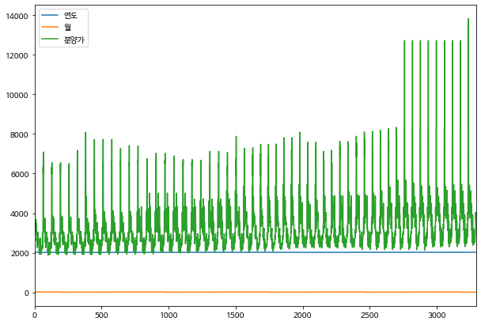
Seaborn!
seaborn은 matplotlib을 더 사용하기 쉽게 해주는 라이브러리입니다.
import matplotlib.pyplot as plt
import pandas as pd
import numpy as np
from IPython.display import Image
# seaborn
import seaborn as snsplt.rc('font', family='NanumBarunGothic')
plt.rcParams["figure.figsize"] = (12, 9)0. 왜 Seaborn 인가요?
matplotlib으로 대부분의 시각화는 가능합니다. 하지만, 다음과 같은 이유로 seaborn을 많은 사람들이 선호합니다.
0-1. seaborn에서만 제공되는 통계 기반 plot
tips = sns.load_dataset("tips")sns.violinplot(x="day", y="total_bill", data=tips)
plt.title('violin plot')
plt.show()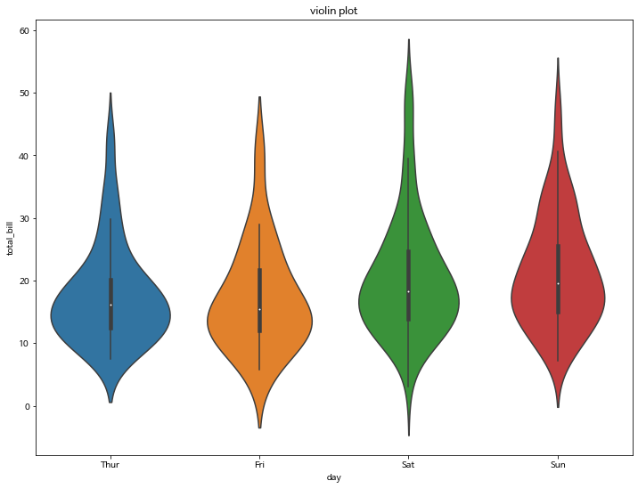
sns.countplot(tips['day'])
plt.title('countplot')
plt.show()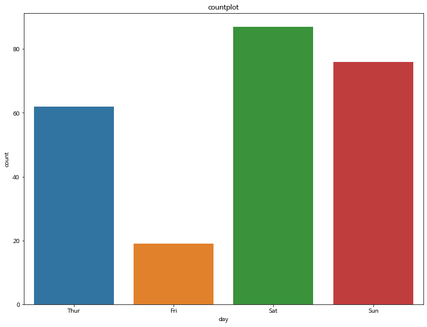
sns.relplot(x='tip', y='total_bill', data=tips)
plt.title('relplot')
plt.show()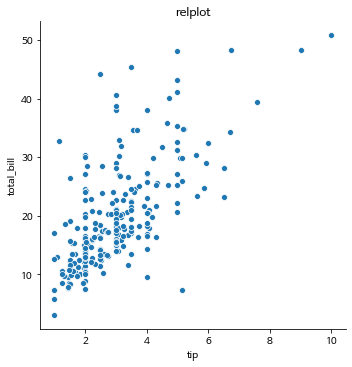
sns.lmplot(x='tip', y='total_bill', data=tips)
plt.title('relplot')
plt.show()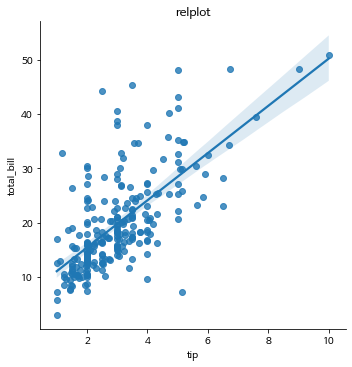
plt.title('heatmap')
sns.heatmap(tips.corr(), annot=True, linewidths=1)
plt.show()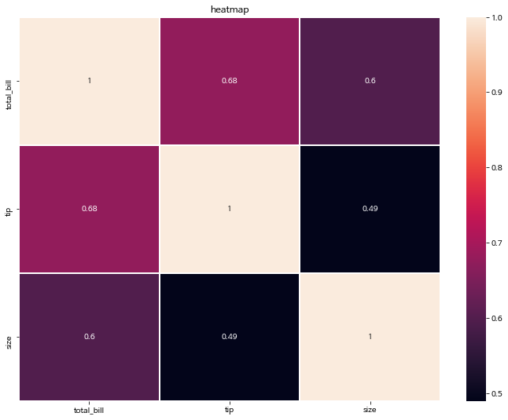
0-2. 아름다운 스타일링
seaborn의 최대 장점 중 하나인, 아름다운 컬러팔레트입니다.
제가 최대 장점으로 꼽은 이유는,
matplotlib의 기본 컬러 색상보다 seaborn은 스타일링에 크게 신경을 쓰지 않아도 default 컬러가 예쁘게 조합해 줍니다.
plt.bar(tips['day'], tips['total_bill'])
plt.show()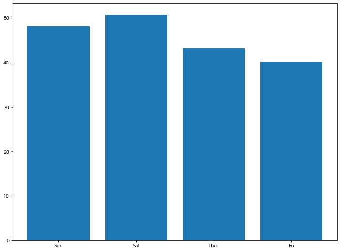
sns.barplot(x="day", y="total_bill", data=tips, palette='colorblind')
plt.show()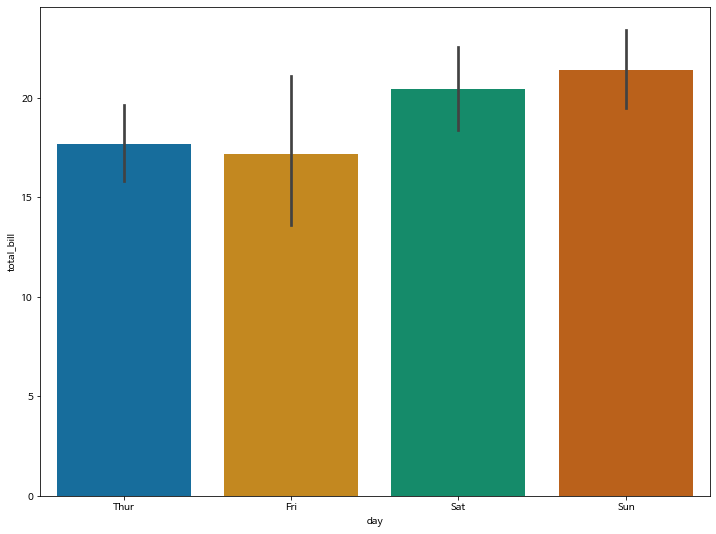
0-3. 컬러 팔레트
자세한 컬러팔레트는 공식 도큐먼트를 참고하세요
sns.palplot(sns.light_palette((210, 90, 60), input="husl"))
sns.palplot(sns.dark_palette("muted purple", input="xkcd"))
sns.palplot(sns.color_palette("BrBG", 10))
sns.palplot(sns.color_palette("BrBG_r", 10))
sns.palplot(sns.color_palette("coolwarm", 10))
sns.palplot(sns.diverging_palette(255, 133, l=60, n=10, center="dark"))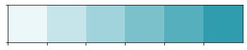
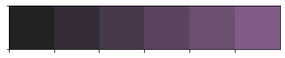
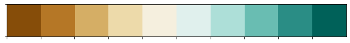
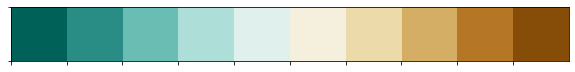
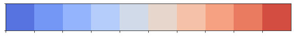
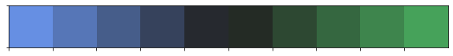
sns.barplot(x="tip", y="total_bill", data=tips, palette='coolwarm')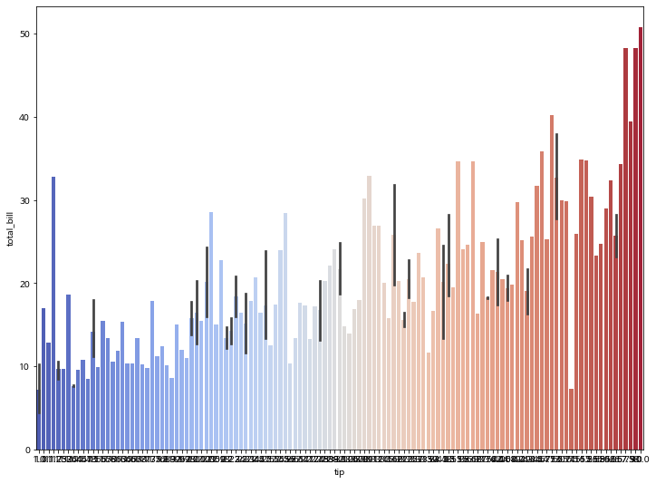
sns.barplot(x="tip", y="total_bill", data=tips, palette='Reds')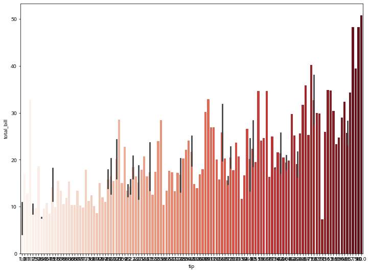
0-4. pandas 데이터프레임과 높은 호환성
tips| total_bill | tip | sex | smoker | day | time | size | |
|---|---|---|---|---|---|---|---|
| 0 | 16.99 | 1.01 | Female | No | Sun | Dinner | 2 |
| 1 | 10.34 | 1.66 | Male | No | Sun | Dinner | 3 |
| 2 | 21.01 | 3.50 | Male | No | Sun | Dinner | 3 |
| 3 | 23.68 | 3.31 | Male | No | Sun | Dinner | 2 |
| 4 | 24.59 | 3.61 | Female | No | Sun | Dinner | 4 |
| 5 | 25.29 | 4.71 | Male | No | Sun | Dinner | 4 |
| 6 | 8.77 | 2.00 | Male | No | Sun | Dinner | 2 |
| 7 | 26.88 | 3.12 | Male | No | Sun | Dinner | 4 |
| 8 | 15.04 | 1.96 | Male | No | Sun | Dinner | 2 |
| 9 | 14.78 | 3.23 | Male | No | Sun | Dinner | 2 |
| 10 | 10.27 | 1.71 | Male | No | Sun | Dinner | 2 |
| 11 | 35.26 | 5.00 | Female | No | Sun | Dinner | 4 |
| 12 | 15.42 | 1.57 | Male | No | Sun | Dinner | 2 |
| 13 | 18.43 | 3.00 | Male | No | Sun | Dinner | 4 |
| 14 | 14.83 | 3.02 | Female | No | Sun | Dinner | 2 |
| 15 | 21.58 | 3.92 | Male | No | Sun | Dinner | 2 |
| 16 | 10.33 | 1.67 | Female | No | Sun | Dinner | 3 |
| 17 | 16.29 | 3.71 | Male | No | Sun | Dinner | 3 |
| 18 | 16.97 | 3.50 | Female | No | Sun | Dinner | 3 |
| 19 | 20.65 | 3.35 | Male | No | Sat | Dinner | 3 |
| 20 | 17.92 | 4.08 | Male | No | Sat | Dinner | 2 |
| 21 | 20.29 | 2.75 | Female | No | Sat | Dinner | 2 |
| 22 | 15.77 | 2.23 | Female | No | Sat | Dinner | 2 |
| 23 | 39.42 | 7.58 | Male | No | Sat | Dinner | 4 |
| 24 | 19.82 | 3.18 | Male | No | Sat | Dinner | 2 |
| 25 | 17.81 | 2.34 | Male | No | Sat | Dinner | 4 |
| 26 | 13.37 | 2.00 | Male | No | Sat | Dinner | 2 |
| 27 | 12.69 | 2.00 | Male | No | Sat | Dinner | 2 |
| 28 | 21.70 | 4.30 | Male | No | Sat | Dinner | 2 |
| 29 | 19.65 | 3.00 | Female | No | Sat | Dinner | 2 |
| ... | ... | ... | ... | ... | ... | ... | ... |
| 214 | 28.17 | 6.50 | Female | Yes | Sat | Dinner | 3 |
| 215 | 12.90 | 1.10 | Female | Yes | Sat | Dinner | 2 |
| 216 | 28.15 | 3.00 | Male | Yes | Sat | Dinner | 5 |
| 217 | 11.59 | 1.50 | Male | Yes | Sat | Dinner | 2 |
| 218 | 7.74 | 1.44 | Male | Yes | Sat | Dinner | 2 |
| 219 | 30.14 | 3.09 | Female | Yes | Sat | Dinner | 4 |
| 220 | 12.16 | 2.20 | Male | Yes | Fri | Lunch | 2 |
| 221 | 13.42 | 3.48 | Female | Yes | Fri | Lunch | 2 |
| 222 | 8.58 | 1.92 | Male | Yes | Fri | Lunch | 1 |
| 223 | 15.98 | 3.00 | Female | No | Fri | Lunch | 3 |
| 224 | 13.42 | 1.58 | Male | Yes | Fri | Lunch | 2 |
| 225 | 16.27 | 2.50 | Female | Yes | Fri | Lunch | 2 |
| 226 | 10.09 | 2.00 | Female | Yes | Fri | Lunch | 2 |
| 227 | 20.45 | 3.00 | Male | No | Sat | Dinner | 4 |
| 228 | 13.28 | 2.72 | Male | No | Sat | Dinner | 2 |
| 229 | 22.12 | 2.88 | Female | Yes | Sat | Dinner | 2 |
| 230 | 24.01 | 2.00 | Male | Yes | Sat | Dinner | 4 |
| 231 | 15.69 | 3.00 | Male | Yes | Sat | Dinner | 3 |
| 232 | 11.61 | 3.39 | Male | No | Sat | Dinner | 2 |
| 233 | 10.77 | 1.47 | Male | No | Sat | Dinner | 2 |
| 234 | 15.53 | 3.00 | Male | Yes | Sat | Dinner | 2 |
| 235 | 10.07 | 1.25 | Male | No | Sat | Dinner | 2 |
| 236 | 12.60 | 1.00 | Male | Yes | Sat | Dinner | 2 |
| 237 | 32.83 | 1.17 | Male | Yes | Sat | Dinner | 2 |
| 238 | 35.83 | 4.67 | Female | No | Sat | Dinner | 3 |
| 239 | 29.03 | 5.92 | Male | No | Sat | Dinner | 3 |
| 240 | 27.18 | 2.00 | Female | Yes | Sat | Dinner | 2 |
| 241 | 22.67 | 2.00 | Male | Yes | Sat | Dinner | 2 |
| 242 | 17.82 | 1.75 | Male | No | Sat | Dinner | 2 |
| 243 | 18.78 | 3.00 | Female | No | Thur | Dinner | 2 |
244 rows × 7 columns
sns.catplot(x="sex", y="total_bill",
# hue="smoker",
data=tips,
kind="bar")
plt.show()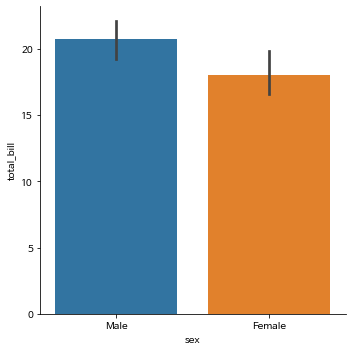
hue 옵션으로 bar를 구분
- xtick, ytick, xlabel, ylabel을 알아서 생성해 줍니다.
- legend 까지 자동으로 생성해 줍니다.
- 뿐만 아니라, 신뢰 구간도 알아서 계산하여 생성합니다.
sns.catplot(x="sex", y="total_bill",
hue="smoker",
data=tips,
kind="bar")
plt.show()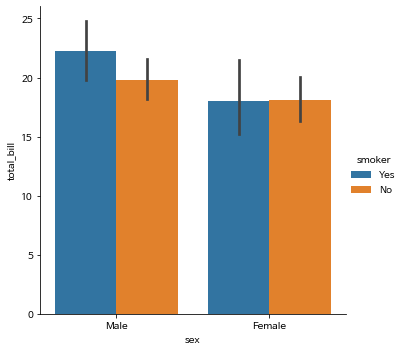
col옵션 하나로 그래프 자체를 분할해 줍니다.
sns.catplot(x="sex", y="total_bill",
hue="smoker",
col="time",
data=tips,
kind="bar")
plt.show()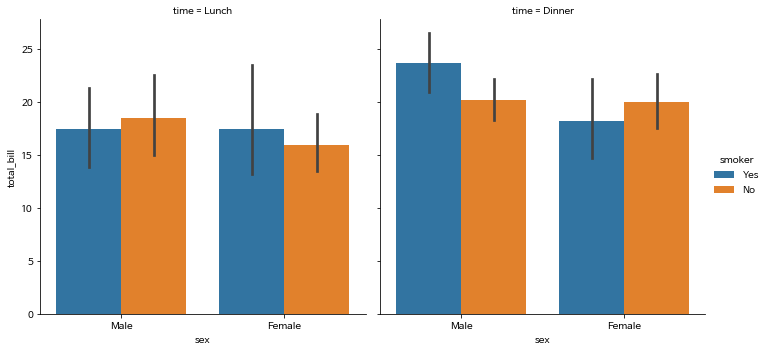
1. Scatterplot
0 ~ 1 사이의 임의의 랜덤한 값을 생성합니다.
np.random.rand(50)array([0.7495407 , 0.75506309, 0.79074154, 0.58173336, 0.05591226,
0.44120119, 0.39079189, 0.65421231, 0.24472657, 0.82568741,
0.90335937, 0.08183662, 0.86937748, 0.51519625, 0.39663515,
0.95221461, 0.60358807, 0.66178163, 0.10398423, 0.94000355,
0.97149385, 0.98210369, 0.87183286, 0.59010696, 0.07390566,
0.347806 , 0.51603445, 0.01111439, 0.96781431, 0.10482912,
0.94017523, 0.54821561, 0.60552495, 0.09274308, 0.82122572,
0.74591335, 0.22823719, 0.97403071, 0.8570471 , 0.14572753,
0.7920306 , 0.48456278, 0.18018709, 0.51548735, 0.0964548 ,
0.35268441, 0.89381632, 0.23079812, 0.41240389, 0.6313873 ])0 부터 50개의 값을 순차적으로 생성합니다.
np.arange(50)array([ 0, 1, 2, 3, 4, 5, 6, 7, 8, 9, 10, 11, 12, 13, 14, 15, 16,
17, 18, 19, 20, 21, 22, 23, 24, 25, 26, 27, 28, 29, 30, 31, 32, 33,
34, 35, 36, 37, 38, 39, 40, 41, 42, 43, 44, 45, 46, 47, 48, 49])1-1. x, y, colors, area 설정하기
- colors 는 임의 값을 color 값으로 변환합니다.
- area는 점의 넓이를 나타냅니다. 값이 커지면 당연히 넓이도 커집니다.
x = np.random.rand(50)
y = np.random.rand(50)
colors = np.arange(50)
area = x * y * 1000plt.scatter(x, y, s=area, c=colors)
plt.show()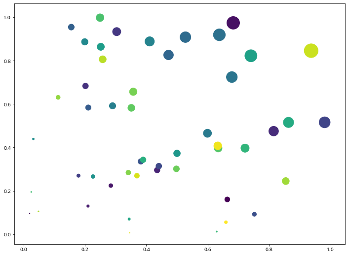
- seaborn 에서는
size와sizes를 동시에 지정해줍니다. sizes옵션에서는 사이즈의 min, max를 명시해 줍니다.hue는 컬러 옵션입니다.palette를 통해 seaborn이 제공하는 아름다운 palette 를 이용하시면 됩니다.
sns.scatterplot(x, y, size=area, sizes=(area.min(), area.max()), hue=area, palette='gist_gray')
plt.show()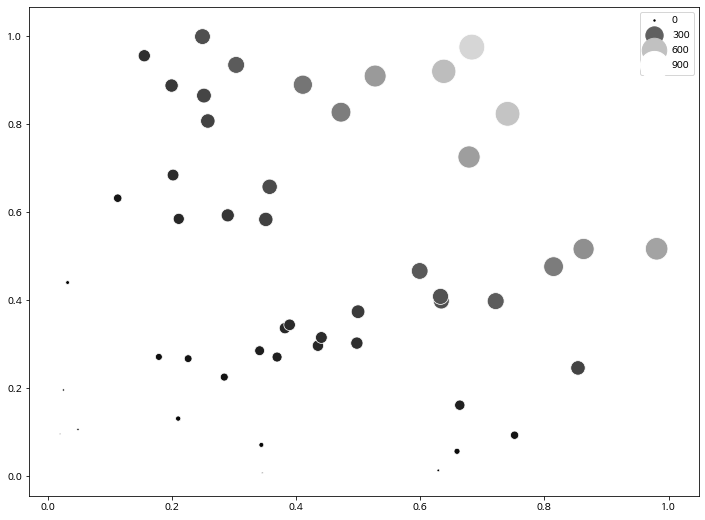
1-2. cmap과 alpha
- cmap에 컬러를 지정하면, 컬러 값을 모두 같게 가져갈 수도 있습니다.
- alpha값은 투명도를 나타내며 0 ~ 1 사이의 값을 지정해 줄 수 있으며, 0에 가까울 수록 투명한 값을 가집니다.
np.random.rand(50)array([0.15447804, 0.2158943 , 0.90502539, 0.91312096, 0.39167451,
0.4373673 , 0.8648405 , 0.25205185, 0.80186853, 0.38861517,
0.35522219, 0.62962027, 0.482229 , 0.70929694, 0.59262225,
0.56323181, 0.0947483 , 0.74713061, 0.69021806, 0.15058586,
0.80048894, 0.9506869 , 0.69379458, 0.38489937, 0.96971749,
0.64536609, 0.78053595, 0.25269096, 0.61363701, 0.47601378,
0.38139148, 0.70005839, 0.14986369, 0.08227638, 0.34634633,
0.59163297, 0.59417895, 0.46335631, 0.35976467, 0.51143204,
0.96780353, 0.20288271, 0.98507282, 0.96457368, 0.42754964,
0.98610429, 0.22361999, 0.37537757, 0.25190578, 0.78028401])plt.figure(figsize=(12, 6))
plt.subplot(131)
plt.scatter(x, y, s=area, c='blue', alpha=0.1)
plt.title('alpha=0.1')
plt.subplot(132)
plt.title('alpha=0.5')
plt.scatter(x, y, s=area, c='red', alpha=0.5)
plt.subplot(133)
plt.title('alpha=1.0')
plt.scatter(x, y, s=area, c='green', alpha=1.0)
plt.show()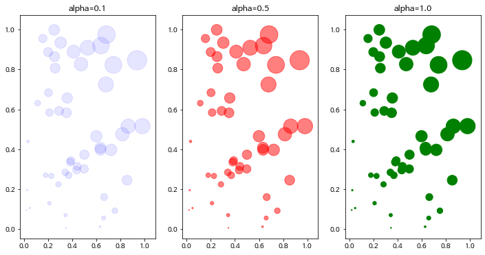
plt.figure(figsize=(12, 6))
plt.subplot(131)
sns.scatterplot(x, y, size=area, sizes=(area.min(), area.max()), color='blue', alpha=0.1)
plt.title('alpha=0.1')
plt.subplot(132)
plt.title('alpha=0.5')
sns.scatterplot(x, y, size=area, sizes=(area.min(), area.max()), color='red', alpha=0.5)
plt.subplot(133)
plt.title('alpha=1.0')
sns.scatterplot(x, y, size=area, sizes=(area.min(), area.max()), color='green', alpha=0.9)
plt.show()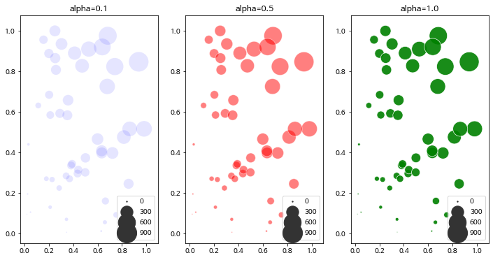
2. Barplot, Barhplot
1개의 canvas 안에 다중 그래프 그리기
2-1. 기본 Barplot 그리기
x = ['Math', 'Programming', 'Data Science', 'Art', 'English', 'Physics']
y = [66, 80, 60, 50, 80, 10]
plt.bar(x, y, align='center', alpha=0.7, color='red')
plt.xticks(x)
plt.ylabel('Scores')
plt.title('Subjects')
plt.show()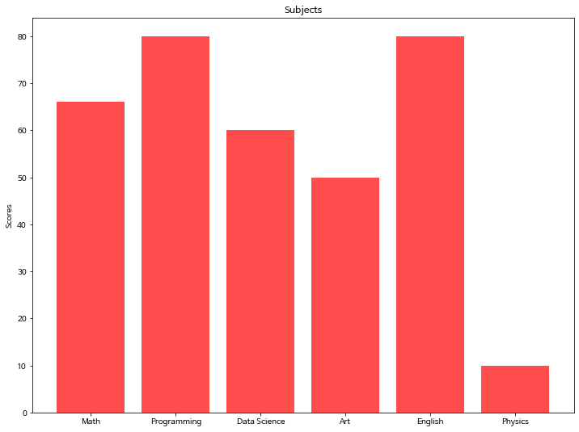
x = ['Math', 'Programming', 'Data Science', 'Art', 'English', 'Physics']
y = [66, 80, 60, 50, 80, 10]
sns.barplot(x, y, alpha=0.8, palette='YlGnBu')
plt.ylabel('Scores')
plt.title('Subjects')
plt.show()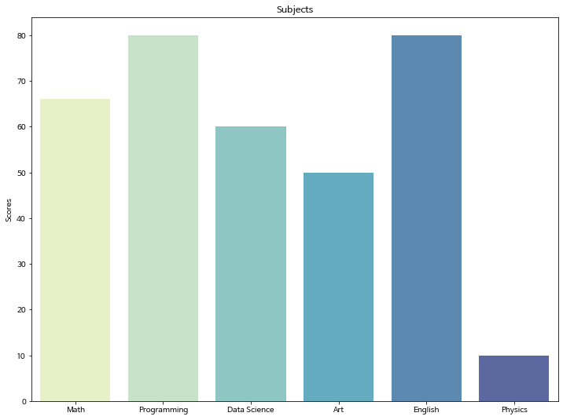
2-2. 기본 Barhplot 그리기
barh 함수에서는 xticks로 설정했던 부분을 yticks로 변경합니다.
x = ['Math', 'Programming', 'Data Science', 'Art', 'English', 'Physics']
y = [66, 80, 60, 50, 80, 10]
plt.barh(x, y, align='center', alpha=0.7, color='green')
plt.yticks(x)
plt.xlabel('Scores')
plt.title('Subjects')
plt.show()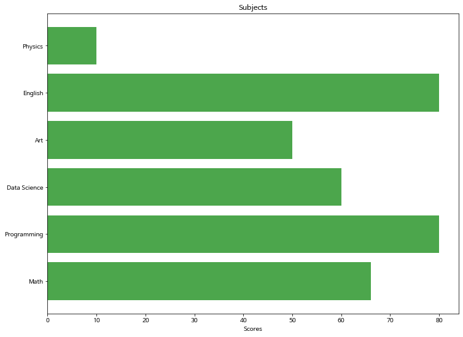
x = ['Math', 'Programming', 'Data Science', 'Art', 'English', 'Physics']
y = [66, 80, 60, 50, 80, 10]
ax = sns.barplot(y, x, alpha=0.9, palette='YlOrRd')
plt.xlabel('Scores')
plt.title('Subjects')
plt.show()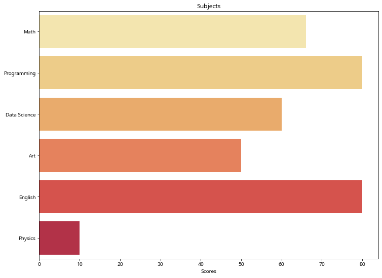
Batplot에서 비교 그래프 그리기
x_label = ['Math', 'Programming', 'Data Science', 'Art', 'English', 'Physics']
x = np.arange(len(x_label))
y_1 = [66, 80, 60, 50, 80, 10]
y_2 = [55, 90, 40, 60, 70, 20]
# 넓이 지정
width = 0.35
# subplots 생성
fig, axes = plt.subplots()
# 넓이 설정
axes.bar(x - width/2, y_1, width, align='center', alpha=0.5)
axes.bar(x + width/2, y_2, width, align='center', alpha=0.8)
# xtick 설정
plt.xticks(x)
axes.set_xticklabels(x_label)
plt.ylabel('Number of Students')
plt.title('Scores')
plt.legend(['john', 'peter'])
plt.show()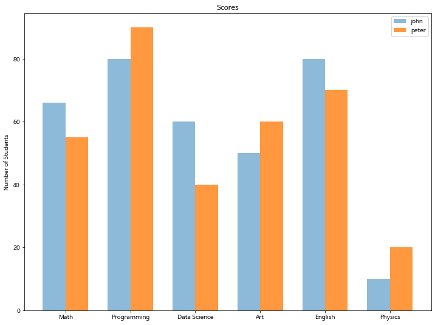
x_label = ['Math', 'Programming', 'Data Science', 'Art', 'English', 'Physics']
x = np.arange(len(x_label))
y_1 = [66, 80, 60, 50, 80, 10]
y_2 = [55, 90, 40, 60, 70, 20]
# 넓이 지정
width = 0.35
# subplots 생성
fig, axes = plt.subplots()
# 넓이 설정
axes.barh(x - width/2, y_1, width, align='center', alpha=0.5, color='green')
axes.barh(x + width/2, y_2, width, align='center', alpha=0.8, color='red')
# xtick 설정
plt.yticks(x)
axes.set_yticklabels(x_label)
plt.xlabel('Score')
plt.title('Subjects')
plt.legend(['john', 'peter'])
plt.show()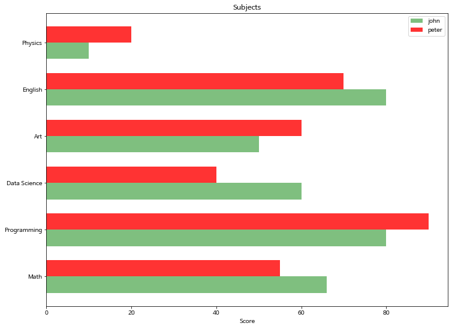
Seaborn에서는 위의 matplotlib과 조금 다른 방식을 취합니다.
실전 tip. * 그래프를 임의로 그려야 하는 경우 -> matplotlib * DataFrame을 가지고 그리는 경우 -> seaborn
seaborn 에서는 hue 옵션으로 매우 쉽게 비교 barplot을 그릴 수 있습니다.
titanic = sns.load_dataset('titanic')
titanic.head()| survived | pclass | sex | age | sibsp | parch | fare | embarked | class | who | adult_male | deck | embark_town | alive | alone | |
|---|---|---|---|---|---|---|---|---|---|---|---|---|---|---|---|
| 0 | 0 | 3 | male | 22.0 | 1 | 0 | 7.2500 | S | Third | man | True | NaN | Southampton | no | False |
| 1 | 1 | 1 | female | 38.0 | 1 | 0 | 71.2833 | C | First | woman | False | C | Cherbourg | yes | False |
| 2 | 1 | 3 | female | 26.0 | 0 | 0 | 7.9250 | S | Third | woman | False | NaN | Southampton | yes | True |
| 3 | 1 | 1 | female | 35.0 | 1 | 0 | 53.1000 | S | First | woman | False | C | Southampton | yes | False |
| 4 | 0 | 3 | male | 35.0 | 0 | 0 | 8.0500 | S | Third | man | True | NaN | Southampton | no | True |
sns.barplot(x='sex', y='survived', hue='pclass', data=titanic, palette="muted")
plt.show()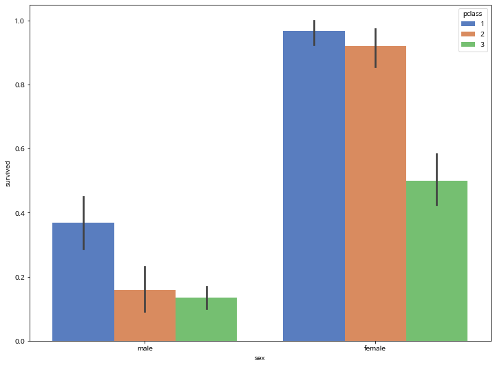
3. Line Plot
3-1. 기본 lineplot 그리기
x = np.arange(0, 10, 0.1)
y = 1 + np.sin(x)
plt.plot(x, y)
plt.xlabel('x value', fontsize=15)
plt.ylabel('y value', fontsize=15)
plt.title('sin graph', fontsize=18)
plt.show()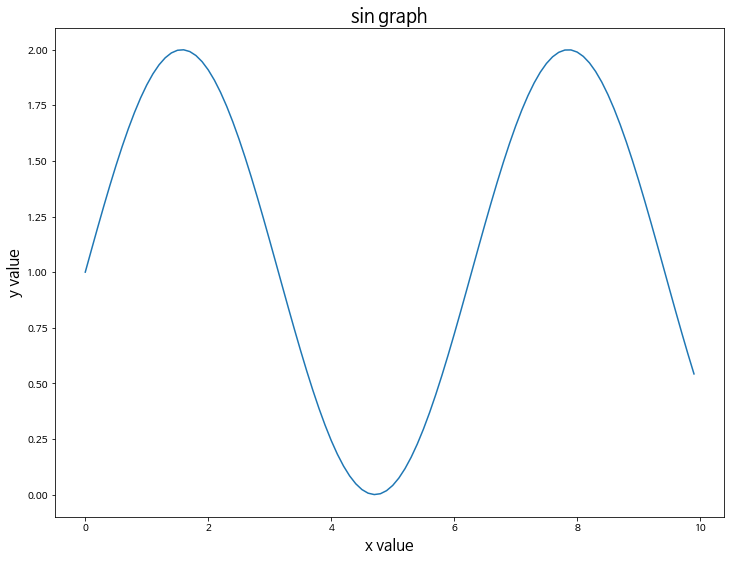
# grid 스타일을 설정할 수 있습니다.
# whitegrid, darkgrid, white, dark, ticks
sns.set_style("darkgrid")
sns.lineplot(x, y)
plt.xlabel('x value', fontsize=15)
plt.ylabel('y value', fontsize=15)
plt.title('sin graph', fontsize=18)
plt.show()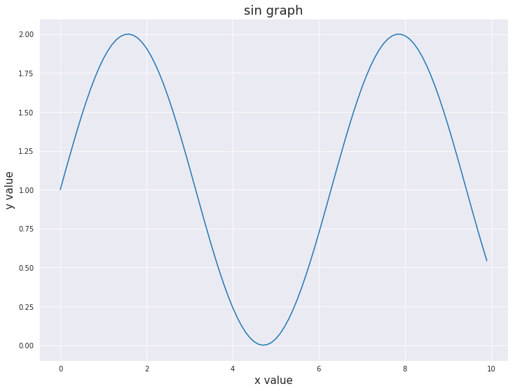
3-2. 2개 이상의 그래프 그리기
- color: 컬러 옵션
- alpha: 투명도 옵션
x = np.arange(0, 10, 0.1)
y_1 = 1 + np.sin(x)
y_2 = 1 + np.cos(x)
plt.plot(x, y_1, label='1+sin', color='blue', alpha=0.3)
plt.plot(x, y_2, label='1+cos', color='red', alpha=0.7)
plt.xlabel('x value', fontsize=15)
plt.ylabel('y value', fontsize=15)
plt.title('sin and cos graph', fontsize=18)
plt.grid()
plt.legend()
plt.show()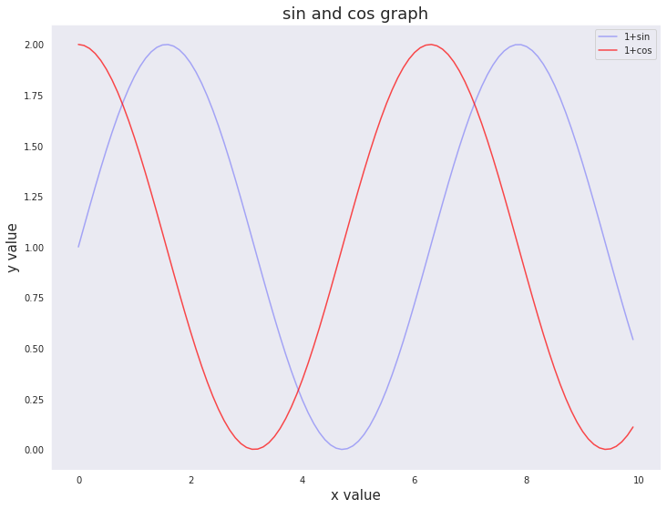
3-3. 마커 스타일링
- marker: 마커 옵션
x = np.arange(0, 10, 0.1)
y_1 = 1 + np.sin(x)
y_2 = 1 + np.cos(x)
plt.plot(x, y_1, label='1+sin', color='blue', alpha=0.3, marker='o')
plt.plot(x, y_2, label='1+cos', color='red', alpha=0.7, marker='+')
plt.xlabel('x value', fontsize=15)
plt.ylabel('y value', fontsize=15)
plt.title('sin and cos graph', fontsize=18)
plt.grid()
plt.legend()
plt.show()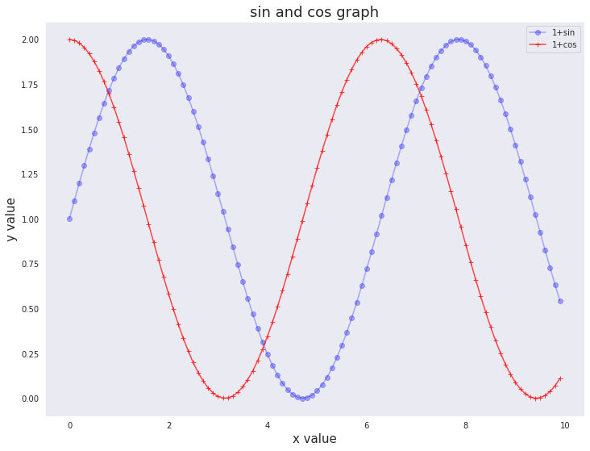
3-4 라인 스타일 변경하기
- linestyle: 라인 스타일 변경 옵션
x = np.arange(0, 10, 0.1)
y_1 = 1 + np.sin(x)
y_2 = 1 + np.cos(x)
plt.plot(x, y_1, label='1+sin', color='blue', linestyle=':')
plt.plot(x, y_2, label='1+cos', color='red', linestyle='-.')
plt.xlabel('x value', fontsize=15)
plt.ylabel('y value', fontsize=15)
plt.title('sin and cos graph', fontsize=18)
plt.grid()
plt.legend()
plt.show()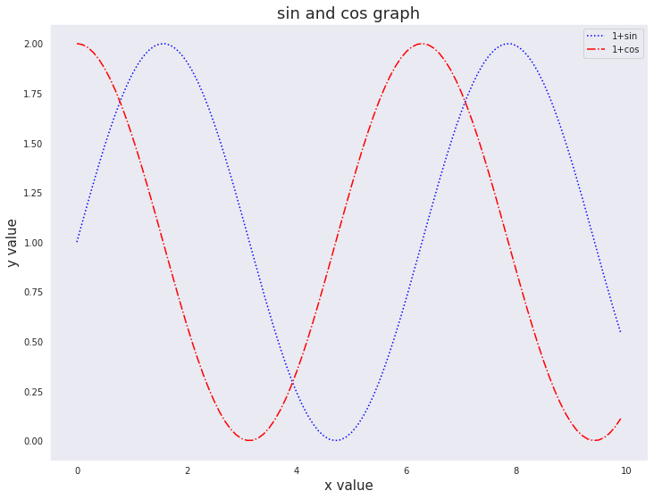
4. Areaplot (Filled Area)
matplotlib에서 area plot을 그리고자 할 때는 fill_between 함수를 사용합니다.
y = np.random.randint(low=5, high=10, size=20)
yarray([5, 6, 8, 8, 9, 7, 8, 6, 5, 5, 5, 5, 5, 5, 7, 9, 9, 8, 6, 8])4-1. 기본 areaplot 그리기
x = np.arange(1,21)
y = np.random.randint(low=5, high=10, size=20)
# fill_between으로 색칠하기
plt.fill_between(x, y, color="green", alpha=0.6)
plt.show()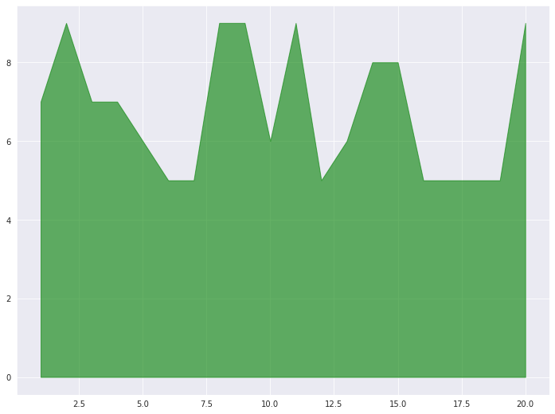
4-2. 경계선을 굵게 그리고 area는 옅게 그리는 효과 적용
plt.fill_between( x, y, color="green", alpha=0.3)
plt.plot(x, y, color="green", alpha=0.8)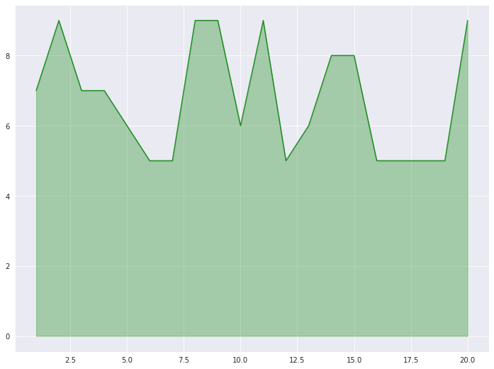
4-3. 여러 그래프를 겹쳐서 표현
x = np.arange(1, 10, 0.05)
y_1 = np.cos(x)+1
y_2 = np.sin(x)+1
y_3 = y_1 * y_2 / np.pi
plt.fill_between(x, y_1, color="green", alpha=0.1)
plt.fill_between(x, y_2, color="blue", alpha=0.2)
plt.fill_between(x, y_3, color="red", alpha=0.3)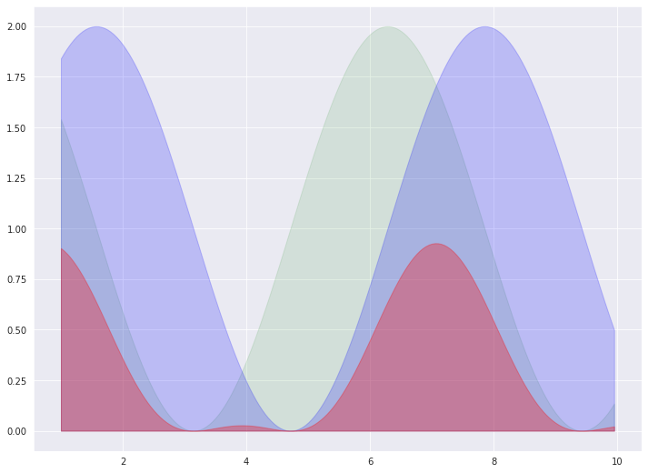
Seaborn에서는 area plot을 지원하지 않습니다.
matplotlib을 활용하여 구현해야 합니다.
5. Histogram
5-1. 기본 Histogram 그리기
N = 100000
bins = 30
x = np.random.randn(N)
plt.hist(x, bins=bins)
plt.show()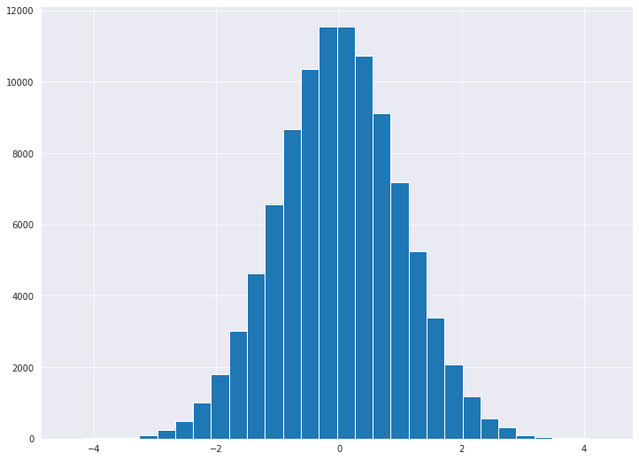
sns.distplot(x, bins=bins, kde=False, hist=True, color='g')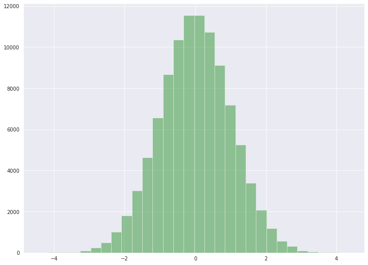
kde을 True로 설정해주면, Density가 Y축에 표기 됩니다.
sns.distplot(x, bins=bins, kde=True, hist=False, color='g')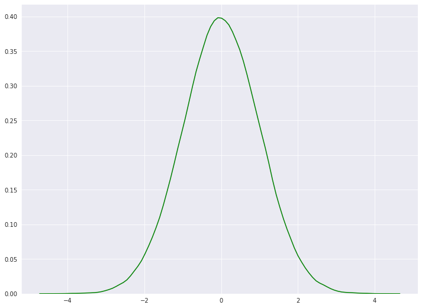
sns.distplot(x, bins=bins, kde=True, hist=True, vertical=True, color='r')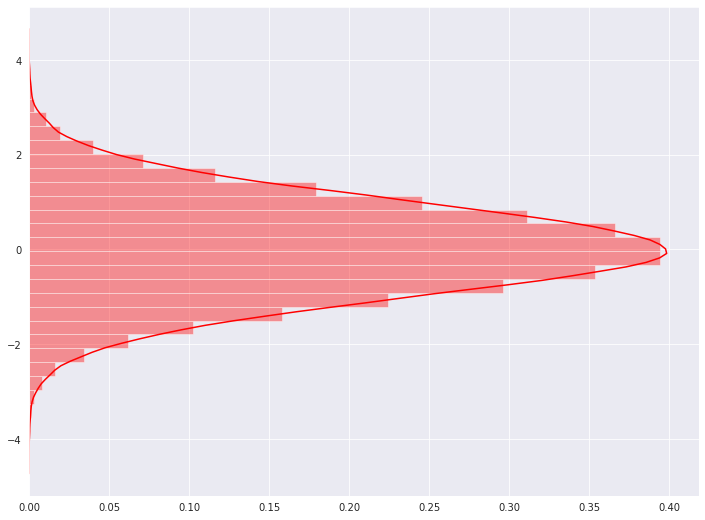
- sharey: y축을 다중 그래프가 share
- tight_layout: graph의 패딩을 자동으로 조절해주어 fit한 graph를 생성
5-2. 다중 Histogram 그리기
N = 100000
bins = 30
x = np.random.randn(N)
fig, axs = plt.subplots(1, 3,
sharey=True,
tight_layout=True
)
fig.set_size_inches(12, 5)
axs[0].hist(x, bins=bins)
axs[1].hist(x, bins=bins*2)
axs[2].hist(x, bins=bins*4)
plt.show()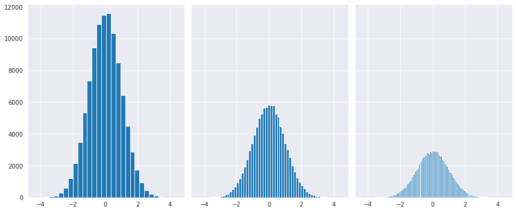
5-3. Y축에 Density 표기
N = 100000
bins = 30
x = np.random.randn(N)
fig, axs = plt.subplots(1, 2,
tight_layout=True
)
fig.set_size_inches(9, 3)
# density=True 값을 통하여 Y축에 density를 표기할 수 있습니다.
axs[0].hist(x, bins=bins, density=True, cumulative=True)
axs[1].hist(x, bins=bins, density=True)
plt.show()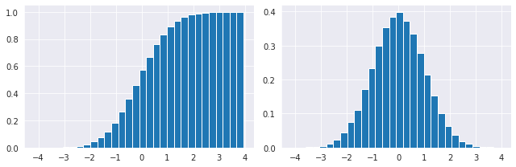
6. Pie Chart
pie chart 옵션
- explode: 파이에서 툭 튀어져 나온 비율
- autopct: 퍼센트 자동으로 표기
- shadow: 그림자 표시
- startangle: 파이를 그리기 시작할 각도
texts, autotexts 인자를 리턴 받습니다.
texts는 label에 대한 텍스트 효과를
autotexts는 파이 위에 그려지는 텍스트 효과를 다룰 때 활용합니다.
labels = ['Samsung', 'Huawei', 'Apple', 'Xiaomi', 'Oppo', 'Etc']
sizes = [20.4, 15.8, 10.5, 9, 7.6, 36.7]
explode = (0.3, 0, 0, 0, 0, 0)
# texts, autotexts 인자를 활용하여 텍스트 스타일링을 적용합니다
patches, texts, autotexts = plt.pie(sizes,
explode=explode,
labels=labels,
autopct='%1.1f%%',
shadow=True,
startangle=90)
plt.title('Smartphone pie', fontsize=15)
# label 텍스트에 대한 스타일 적용
for t in texts:
t.set_fontsize(12)
t.set_color('gray')
# pie 위의 텍스트에 대한 스타일 적용
for t in autotexts:
t.set_color("white")
t.set_fontsize(18)
plt.show()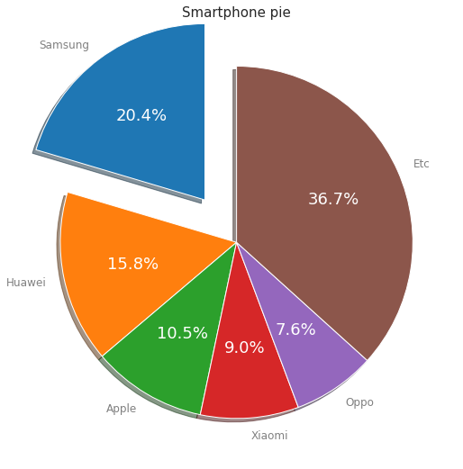
Seaborn에서는 pie plot을 지원하지 않습니다.
matplotlib을 활용하여 구현해야 합니다.
7. Box Plot
샘플 데이터를 생성합니다.
# 샘플 데이터 생성
spread = np.random.rand(50) * 100
center = np.ones(25) * 50
flier_high = np.random.rand(10) * 100 + 100
flier_low = np.random.rand(10) * -100
data = np.concatenate((spread, center, flier_high, flier_low))7-1 기본 박스플롯 생성
plt.boxplot(data)
plt.tight_layout()
plt.show()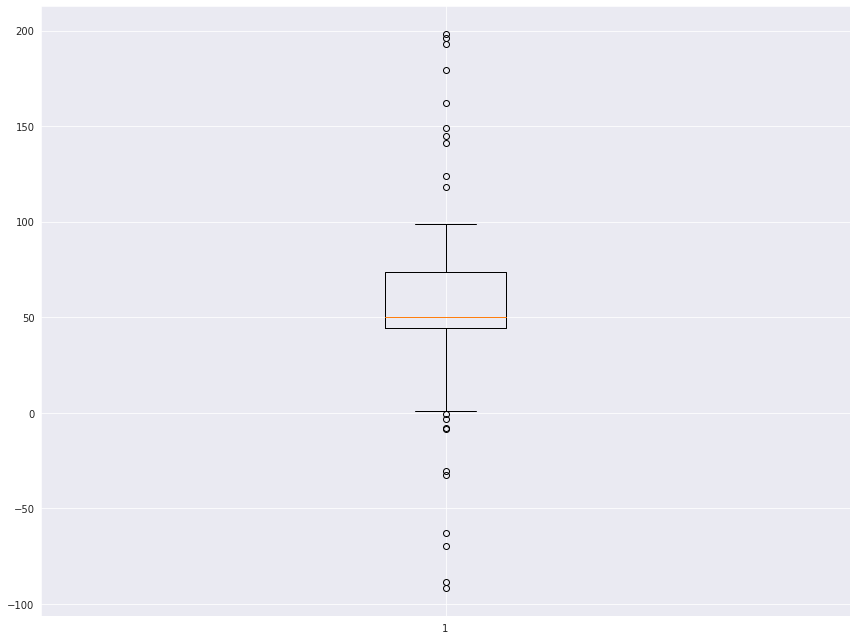
sns.boxplot(data, orient='v', width=0.2)
plt.show()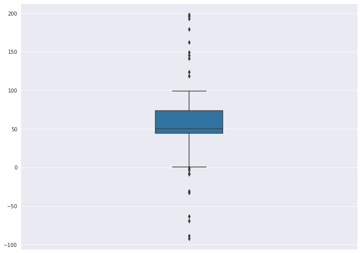
7-2. 다중 박스플롯 생성
# 샘플 데이터 생성
spread = np.random.rand(50) * 100
center = np.ones(25) * 50
flier_high = np.random.rand(10) * 100 + 100
flier_low = np.random.rand(10) * -100
data = np.concatenate((spread, center, flier_high, flier_low))
spread = np.random.rand(50) * 100
center = np.ones(25) * 40
flier_high = np.random.rand(10) * 100 + 100
flier_low = np.random.rand(10) * -100
d2 = np.concatenate((spread, center, flier_high, flier_low))
data.shape = (-1, 1)
d2.shape = (-1, 1)
data = [data, d2, d2[::2,0]]boxplot()으로 매우 쉽게 생성할 수 있습니다.
다중 그래프 생성을 위해서는 data 자체가 2차원으로 구성되어 있어야 합니다.
row와 column으로 구성된 DataFrame에서 Column은 X축에 Row는 Y축에 구성된다고 이해하시면 됩니다.
plt.boxplot(data)
plt.show()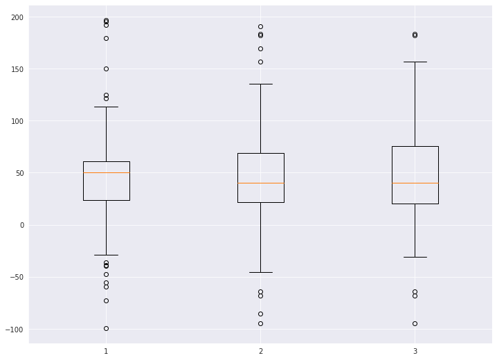
seaborn에서 boxplot을 그릴 때는DataFrame을 가지고 그릴 때 주로 활용합니다.
barplot과 마찬가지로, 용도에 따라 적절한 라이브러리를 사용합니다.
실전 tip. * 그래프를 임의로 그려야 하는 경우 -> matplotlib * DataFrame을 가지고 그리는 경우 -> seaborn
seaborn 에서는 hue 옵션으로 매우 쉽게 비교 boxplot을 그릴 수 있습니다.
titanic = sns.load_dataset('titanic')
titanic.head()| survived | pclass | sex | age | sibsp | parch | fare | embarked | class | who | adult_male | deck | embark_town | alive | alone | |
|---|---|---|---|---|---|---|---|---|---|---|---|---|---|---|---|
| 0 | 0 | 3 | male | 22.0 | 1 | 0 | 7.2500 | S | Third | man | True | NaN | Southampton | no | False |
| 1 | 1 | 1 | female | 38.0 | 1 | 0 | 71.2833 | C | First | woman | False | C | Cherbourg | yes | False |
| 2 | 1 | 3 | female | 26.0 | 0 | 0 | 7.9250 | S | Third | woman | False | NaN | Southampton | yes | True |
| 3 | 1 | 1 | female | 35.0 | 1 | 0 | 53.1000 | S | First | woman | False | C | Southampton | yes | False |
| 4 | 0 | 3 | male | 35.0 | 0 | 0 | 8.0500 | S | Third | man | True | NaN | Southampton | no | True |
sns.boxplot(x='pclass', y='age', hue='survived', data=titanic)
plt.show()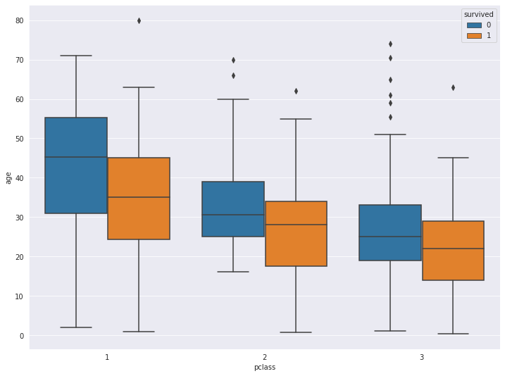
7-3. Box Plot 축 바꾸기
vert=False 옵션을 통해 표시하고자 하는 축을 바꿀 수 있습니다.
plt.title('Horizontal Box Plot', fontsize=15)
plt.boxplot(data, vert=False)
plt.show()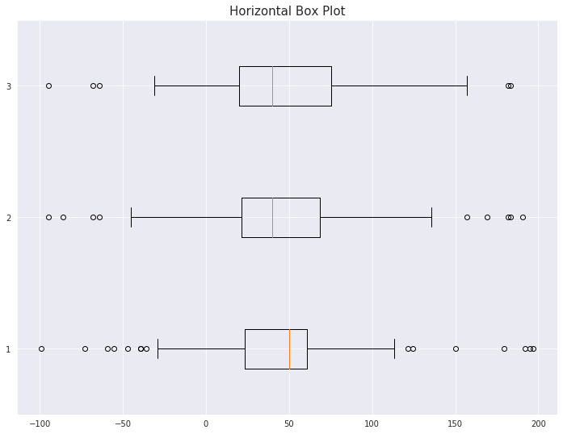
7-4. Outlier 마커 심볼과 컬러 변경
outlier_marker = dict(markerfacecolor='r', marker='D')plt.title('Changed Outlier Symbols', fontsize=15)
plt.boxplot(data, flierprops=outlier_marker)
plt.show()8. 3D 그래프 그리기
3d 로 그래프를 그리기 위해서는 mplot3d를 추가로 import 합니다
from mpl_toolkits import mplot3d8-1. 밑그림 그리기 (캔버스)
fig = plt.figure()
ax = plt.axes(projection='3d')8-2. 3d plot 그리기
# project=3d로 설정합니다
ax = plt.axes(projection='3d')
# x, y, z 데이터를 생성합니다
z = np.linspace(0, 15, 1000)
x = np.sin(z)
y = np.cos(z)
ax.plot(x, y, z, 'gray')
plt.show()# project=3d로 설정합니다
ax = plt.axes(projection='3d')
sample_size = 100
x = np.cumsum(np.random.normal(0, 1, sample_size))
y = np.cumsum(np.random.normal(0, 1, sample_size))
z = np.cumsum(np.random.normal(0, 1, sample_size))
ax.plot3D(x, y, z, alpha=0.6, marker='o')
plt.title("ax.plot")
plt.show()8-3. 3d-scatter 그리기
fig = plt.figure(figsize=(10, 5))
ax = fig.add_subplot(111, projection='3d') # Axe3D object
sample_size = 500
x = np.cumsum(np.random.normal(0, 5, sample_size))
y = np.cumsum(np.random.normal(0, 5, sample_size))
z = np.cumsum(np.random.normal(0, 5, sample_size))
ax.scatter(x, y, z, c = z, s=20, alpha=0.5, cmap='Greens')
plt.title("ax.scatter")
plt.show()8-4. contour3D 그리기 (등고선)
x = np.linspace(-6, 6, 30)
y = np.linspace(-6, 6, 30)
x, y = np.meshgrid(x, y)
z = np.sin(np.sqrt(x**2 + y**2))
fig = plt.figure(figsize=(12, 6))
ax = plt.axes(projection='3d')
ax.contour3D(x, y, z, 20, cmap=plt.cm.rainbow)
plt.title("ax.contour3D")
plt.show()9. imshow
이미지(image) 데이터와 유사하게 행과 열을 가진 2차원의 데이터를 시각화 할 때는 imshow를 활용합니다.
from sklearn.datasets import load_digits
digits = load_digits()
X = digits.images[:10]
X[0]array([[ 0., 0., 5., 13., 9., 1., 0., 0.],
[ 0., 0., 13., 15., 10., 15., 5., 0.],
[ 0., 3., 15., 2., 0., 11., 8., 0.],
[ 0., 4., 12., 0., 0., 8., 8., 0.],
[ 0., 5., 8., 0., 0., 9., 8., 0.],
[ 0., 4., 11., 0., 1., 12., 7., 0.],
[ 0., 2., 14., 5., 10., 12., 0., 0.],
[ 0., 0., 6., 13., 10., 0., 0., 0.]])load_digits는 0~16 값을 가지는 array로 이루어져 있습니다.1개의 array는 8 X 8 배열 안에 표현되어 있습니다.
숫자는 0~9까지 이루어져있습니다.
fig, axes = plt.subplots(nrows=2, ncols=5, sharex=True, figsize=(12, 6), sharey=True)
for i in range(10):
axes[i//5][i%5].imshow(X[i], cmap='Blues')
axes[i//5][i%5].set_title(str(i), fontsize=20)
plt.tight_layout()
plt.show()References
import pandas as pd
import numpy as np
import matplotlib.pyplot as plt
import seaborn as sns# 한글 폰트 적용
plt.rc('font', family='NanumBarunGothic')
# 캔버스 사이즈 적용
plt.rcParams["figure.figsize"] = (12, 9)통계 기반의 시각화를 제공해주는 Seaborn
seaborn 라이브러리가 매력적인 이유는 바로 통계 차트 입니다.
이번 실습에서는 seaborn의 다양한 통계 차트 중 대표적인 차트 몇 개를 뽑아서 다뤄볼 예정입니다.
더 많은 통계 차트를 경험해보고 싶으신 분은 공식 도큐먼트에서 확인하실 수 있습니다.
titanic = sns.load_dataset('titanic')
titanic| survived | pclass | sex | age | sibsp | parch | fare | embarked | class | who | adult_male | deck | embark_town | alive | alone | |
|---|---|---|---|---|---|---|---|---|---|---|---|---|---|---|---|
| 0 | 0 | 3 | male | 22.0 | 1 | 0 | 7.2500 | S | Third | man | True | NaN | Southampton | no | False |
| 1 | 1 | 1 | female | 38.0 | 1 | 0 | 71.2833 | C | First | woman | False | C | Cherbourg | yes | False |
| 2 | 1 | 3 | female | 26.0 | 0 | 0 | 7.9250 | S | Third | woman | False | NaN | Southampton | yes | True |
| 3 | 1 | 1 | female | 35.0 | 1 | 0 | 53.1000 | S | First | woman | False | C | Southampton | yes | False |
| 4 | 0 | 3 | male | 35.0 | 0 | 0 | 8.0500 | S | Third | man | True | NaN | Southampton | no | True |
| 5 | 0 | 3 | male | NaN | 0 | 0 | 8.4583 | Q | Third | man | True | NaN | Queenstown | no | True |
| 6 | 0 | 1 | male | 54.0 | 0 | 0 | 51.8625 | S | First | man | True | E | Southampton | no | True |
| 7 | 0 | 3 | male | 2.0 | 3 | 1 | 21.0750 | S | Third | child | False | NaN | Southampton | no | False |
| 8 | 1 | 3 | female | 27.0 | 0 | 2 | 11.1333 | S | Third | woman | False | NaN | Southampton | yes | False |
| 9 | 1 | 2 | female | 14.0 | 1 | 0 | 30.0708 | C | Second | child | False | NaN | Cherbourg | yes | False |
| 10 | 1 | 3 | female | 4.0 | 1 | 1 | 16.7000 | S | Third | child | False | G | Southampton | yes | False |
| 11 | 1 | 1 | female | 58.0 | 0 | 0 | 26.5500 | S | First | woman | False | C | Southampton | yes | True |
| 12 | 0 | 3 | male | 20.0 | 0 | 0 | 8.0500 | S | Third | man | True | NaN | Southampton | no | True |
| 13 | 0 | 3 | male | 39.0 | 1 | 5 | 31.2750 | S | Third | man | True | NaN | Southampton | no | False |
| 14 | 0 | 3 | female | 14.0 | 0 | 0 | 7.8542 | S | Third | child | False | NaN | Southampton | no | True |
| 15 | 1 | 2 | female | 55.0 | 0 | 0 | 16.0000 | S | Second | woman | False | NaN | Southampton | yes | True |
| 16 | 0 | 3 | male | 2.0 | 4 | 1 | 29.1250 | Q | Third | child | False | NaN | Queenstown | no | False |
| 17 | 1 | 2 | male | NaN | 0 | 0 | 13.0000 | S | Second | man | True | NaN | Southampton | yes | True |
| 18 | 0 | 3 | female | 31.0 | 1 | 0 | 18.0000 | S | Third | woman | False | NaN | Southampton | no | False |
| 19 | 1 | 3 | female | NaN | 0 | 0 | 7.2250 | C | Third | woman | False | NaN | Cherbourg | yes | True |
| 20 | 0 | 2 | male | 35.0 | 0 | 0 | 26.0000 | S | Second | man | True | NaN | Southampton | no | True |
| 21 | 1 | 2 | male | 34.0 | 0 | 0 | 13.0000 | S | Second | man | True | D | Southampton | yes | True |
| 22 | 1 | 3 | female | 15.0 | 0 | 0 | 8.0292 | Q | Third | child | False | NaN | Queenstown | yes | True |
| 23 | 1 | 1 | male | 28.0 | 0 | 0 | 35.5000 | S | First | man | True | A | Southampton | yes | True |
| 24 | 0 | 3 | female | 8.0 | 3 | 1 | 21.0750 | S | Third | child | False | NaN | Southampton | no | False |
| 25 | 1 | 3 | female | 38.0 | 1 | 5 | 31.3875 | S | Third | woman | False | NaN | Southampton | yes | False |
| 26 | 0 | 3 | male | NaN | 0 | 0 | 7.2250 | C | Third | man | True | NaN | Cherbourg | no | True |
| 27 | 0 | 1 | male | 19.0 | 3 | 2 | 263.0000 | S | First | man | True | C | Southampton | no | False |
| 28 | 1 | 3 | female | NaN | 0 | 0 | 7.8792 | Q | Third | woman | False | NaN | Queenstown | yes | True |
| 29 | 0 | 3 | male | NaN | 0 | 0 | 7.8958 | S | Third | man | True | NaN | Southampton | no | True |
| ... | ... | ... | ... | ... | ... | ... | ... | ... | ... | ... | ... | ... | ... | ... | ... |
| 861 | 0 | 2 | male | 21.0 | 1 | 0 | 11.5000 | S | Second | man | True | NaN | Southampton | no | False |
| 862 | 1 | 1 | female | 48.0 | 0 | 0 | 25.9292 | S | First | woman | False | D | Southampton | yes | True |
| 863 | 0 | 3 | female | NaN | 8 | 2 | 69.5500 | S | Third | woman | False | NaN | Southampton | no | False |
| 864 | 0 | 2 | male | 24.0 | 0 | 0 | 13.0000 | S | Second | man | True | NaN | Southampton | no | True |
| 865 | 1 | 2 | female | 42.0 | 0 | 0 | 13.0000 | S | Second | woman | False | NaN | Southampton | yes | True |
| 866 | 1 | 2 | female | 27.0 | 1 | 0 | 13.8583 | C | Second | woman | False | NaN | Cherbourg | yes | False |
| 867 | 0 | 1 | male | 31.0 | 0 | 0 | 50.4958 | S | First | man | True | A | Southampton | no | True |
| 868 | 0 | 3 | male | NaN | 0 | 0 | 9.5000 | S | Third | man | True | NaN | Southampton | no | True |
| 869 | 1 | 3 | male | 4.0 | 1 | 1 | 11.1333 | S | Third | child | False | NaN | Southampton | yes | False |
| 870 | 0 | 3 | male | 26.0 | 0 | 0 | 7.8958 | S | Third | man | True | NaN | Southampton | no | True |
| 871 | 1 | 1 | female | 47.0 | 1 | 1 | 52.5542 | S | First | woman | False | D | Southampton | yes | False |
| 872 | 0 | 1 | male | 33.0 | 0 | 0 | 5.0000 | S | First | man | True | B | Southampton | no | True |
| 873 | 0 | 3 | male | 47.0 | 0 | 0 | 9.0000 | S | Third | man | True | NaN | Southampton | no | True |
| 874 | 1 | 2 | female | 28.0 | 1 | 0 | 24.0000 | C | Second | woman | False | NaN | Cherbourg | yes | False |
| 875 | 1 | 3 | female | 15.0 | 0 | 0 | 7.2250 | C | Third | child | False | NaN | Cherbourg | yes | True |
| 876 | 0 | 3 | male | 20.0 | 0 | 0 | 9.8458 | S | Third | man | True | NaN | Southampton | no | True |
| 877 | 0 | 3 | male | 19.0 | 0 | 0 | 7.8958 | S | Third | man | True | NaN | Southampton | no | True |
| 878 | 0 | 3 | male | NaN | 0 | 0 | 7.8958 | S | Third | man | True | NaN | Southampton | no | True |
| 879 | 1 | 1 | female | 56.0 | 0 | 1 | 83.1583 | C | First | woman | False | C | Cherbourg | yes | False |
| 880 | 1 | 2 | female | 25.0 | 0 | 1 | 26.0000 | S | Second | woman | False | NaN | Southampton | yes | False |
| 881 | 0 | 3 | male | 33.0 | 0 | 0 | 7.8958 | S | Third | man | True | NaN | Southampton | no | True |
| 882 | 0 | 3 | female | 22.0 | 0 | 0 | 10.5167 | S | Third | woman | False | NaN | Southampton | no | True |
| 883 | 0 | 2 | male | 28.0 | 0 | 0 | 10.5000 | S | Second | man | True | NaN | Southampton | no | True |
| 884 | 0 | 3 | male | 25.0 | 0 | 0 | 7.0500 | S | Third | man | True | NaN | Southampton | no | True |
| 885 | 0 | 3 | female | 39.0 | 0 | 5 | 29.1250 | Q | Third | woman | False | NaN | Queenstown | no | False |
| 886 | 0 | 2 | male | 27.0 | 0 | 0 | 13.0000 | S | Second | man | True | NaN | Southampton | no | True |
| 887 | 1 | 1 | female | 19.0 | 0 | 0 | 30.0000 | S | First | woman | False | B | Southampton | yes | True |
| 888 | 0 | 3 | female | NaN | 1 | 2 | 23.4500 | S | Third | woman | False | NaN | Southampton | no | False |
| 889 | 1 | 1 | male | 26.0 | 0 | 0 | 30.0000 | C | First | man | True | C | Cherbourg | yes | True |
| 890 | 0 | 3 | male | 32.0 | 0 | 0 | 7.7500 | Q | Third | man | True | NaN | Queenstown | no | True |
891 rows × 15 columns
- survived: 생존여부
- pclass: 좌석등급
- sex: 성별
- age: 나이
- sibsp: 형제자매 + 배우자 숫자
- parch: 부모자식 숫자
- fare: 요금
- embarked: 탑승 항구
- class: 좌석등급 (영문)
- who: 사람 구분
- deck: 데크
- embark_town: 탑승 항구 (영문)
- alive: 생존여부 (영문)
- alone: 혼자인지 여부
tips = sns.load_dataset('tips')
tips| total_bill | tip | sex | smoker | day | time | size | |
|---|---|---|---|---|---|---|---|
| 0 | 16.99 | 1.01 | Female | No | Sun | Dinner | 2 |
| 1 | 10.34 | 1.66 | Male | No | Sun | Dinner | 3 |
| 2 | 21.01 | 3.50 | Male | No | Sun | Dinner | 3 |
| 3 | 23.68 | 3.31 | Male | No | Sun | Dinner | 2 |
| 4 | 24.59 | 3.61 | Female | No | Sun | Dinner | 4 |
| 5 | 25.29 | 4.71 | Male | No | Sun | Dinner | 4 |
| 6 | 8.77 | 2.00 | Male | No | Sun | Dinner | 2 |
| 7 | 26.88 | 3.12 | Male | No | Sun | Dinner | 4 |
| 8 | 15.04 | 1.96 | Male | No | Sun | Dinner | 2 |
| 9 | 14.78 | 3.23 | Male | No | Sun | Dinner | 2 |
| 10 | 10.27 | 1.71 | Male | No | Sun | Dinner | 2 |
| 11 | 35.26 | 5.00 | Female | No | Sun | Dinner | 4 |
| 12 | 15.42 | 1.57 | Male | No | Sun | Dinner | 2 |
| 13 | 18.43 | 3.00 | Male | No | Sun | Dinner | 4 |
| 14 | 14.83 | 3.02 | Female | No | Sun | Dinner | 2 |
| 15 | 21.58 | 3.92 | Male | No | Sun | Dinner | 2 |
| 16 | 10.33 | 1.67 | Female | No | Sun | Dinner | 3 |
| 17 | 16.29 | 3.71 | Male | No | Sun | Dinner | 3 |
| 18 | 16.97 | 3.50 | Female | No | Sun | Dinner | 3 |
| 19 | 20.65 | 3.35 | Male | No | Sat | Dinner | 3 |
| 20 | 17.92 | 4.08 | Male | No | Sat | Dinner | 2 |
| 21 | 20.29 | 2.75 | Female | No | Sat | Dinner | 2 |
| 22 | 15.77 | 2.23 | Female | No | Sat | Dinner | 2 |
| 23 | 39.42 | 7.58 | Male | No | Sat | Dinner | 4 |
| 24 | 19.82 | 3.18 | Male | No | Sat | Dinner | 2 |
| 25 | 17.81 | 2.34 | Male | No | Sat | Dinner | 4 |
| 26 | 13.37 | 2.00 | Male | No | Sat | Dinner | 2 |
| 27 | 12.69 | 2.00 | Male | No | Sat | Dinner | 2 |
| 28 | 21.70 | 4.30 | Male | No | Sat | Dinner | 2 |
| 29 | 19.65 | 3.00 | Female | No | Sat | Dinner | 2 |
| ... | ... | ... | ... | ... | ... | ... | ... |
| 214 | 28.17 | 6.50 | Female | Yes | Sat | Dinner | 3 |
| 215 | 12.90 | 1.10 | Female | Yes | Sat | Dinner | 2 |
| 216 | 28.15 | 3.00 | Male | Yes | Sat | Dinner | 5 |
| 217 | 11.59 | 1.50 | Male | Yes | Sat | Dinner | 2 |
| 218 | 7.74 | 1.44 | Male | Yes | Sat | Dinner | 2 |
| 219 | 30.14 | 3.09 | Female | Yes | Sat | Dinner | 4 |
| 220 | 12.16 | 2.20 | Male | Yes | Fri | Lunch | 2 |
| 221 | 13.42 | 3.48 | Female | Yes | Fri | Lunch | 2 |
| 222 | 8.58 | 1.92 | Male | Yes | Fri | Lunch | 1 |
| 223 | 15.98 | 3.00 | Female | No | Fri | Lunch | 3 |
| 224 | 13.42 | 1.58 | Male | Yes | Fri | Lunch | 2 |
| 225 | 16.27 | 2.50 | Female | Yes | Fri | Lunch | 2 |
| 226 | 10.09 | 2.00 | Female | Yes | Fri | Lunch | 2 |
| 227 | 20.45 | 3.00 | Male | No | Sat | Dinner | 4 |
| 228 | 13.28 | 2.72 | Male | No | Sat | Dinner | 2 |
| 229 | 22.12 | 2.88 | Female | Yes | Sat | Dinner | 2 |
| 230 | 24.01 | 2.00 | Male | Yes | Sat | Dinner | 4 |
| 231 | 15.69 | 3.00 | Male | Yes | Sat | Dinner | 3 |
| 232 | 11.61 | 3.39 | Male | No | Sat | Dinner | 2 |
| 233 | 10.77 | 1.47 | Male | No | Sat | Dinner | 2 |
| 234 | 15.53 | 3.00 | Male | Yes | Sat | Dinner | 2 |
| 235 | 10.07 | 1.25 | Male | No | Sat | Dinner | 2 |
| 236 | 12.60 | 1.00 | Male | Yes | Sat | Dinner | 2 |
| 237 | 32.83 | 1.17 | Male | Yes | Sat | Dinner | 2 |
| 238 | 35.83 | 4.67 | Female | No | Sat | Dinner | 3 |
| 239 | 29.03 | 5.92 | Male | No | Sat | Dinner | 3 |
| 240 | 27.18 | 2.00 | Female | Yes | Sat | Dinner | 2 |
| 241 | 22.67 | 2.00 | Male | Yes | Sat | Dinner | 2 |
| 242 | 17.82 | 1.75 | Male | No | Sat | Dinner | 2 |
| 243 | 18.78 | 3.00 | Female | No | Thur | Dinner | 2 |
244 rows × 7 columns
- total_bill: 총 합계 요금표
- tip: 팁
- sex: 성별
- smoker: 흡연자 여부
- day: 요일
- time: 식사 시간
- size: 식사 인원
1. Countplot
항목별 갯수를 세어주는 countplot 입니다.
알아서 해당 column을 구성하고 있는 value들을 구분하여 보여줍니다.
# 배경을 darkgrid 로 설정
sns.set(style='darkgrid')1-1 세로로 그리기
sns.countplot(x="class", hue="who", data=titanic)
plt.show()1-2. 가로로 그리기
sns.countplot(y="class", hue="who", data=titanic)
plt.show()1-3. 색상 팔레트 설정
sns.countplot(x="class", hue="who", palette='copper', data=titanic)
plt.show()2. distplot
matplotlib의 hist 그래프와 kdeplot을 통합한 그래프 입니다.
분포와 밀도를 확인할 수 있습니다.
# 샘플데이터 생성
x = np.random.randn(100)
xarray([ 1.17811065, 0.90162666, -0.39382036, -0.01852491, -0.68224642,
1.89058591, 0.57369899, 0.58606258, -0.77628832, -0.36430276,
0.55128972, 0.18351767, -0.64770772, 1.2060702 , 1.48121065,
0.61565729, 0.28860658, -2.32674689, -1.26960711, -0.9691706 ,
-0.68310866, 1.01295978, -0.61159729, 1.61489333, 1.79977145,
-0.97003213, 1.57917981, 0.94743579, 0.27742351, -0.68617697,
0.83131245, 0.2787552 , -0.17733246, 1.21664048, -0.77190548,
-0.48873516, -1.94082342, -1.15466723, -0.81992608, 0.32210834,
-0.36373671, -0.19735293, 0.16315914, -0.03999856, -0.33097224,
-0.6585904 , -1.03446451, 1.21436941, 1.23970198, 0.07038427,
0.31882352, 0.66758819, 0.81964704, -0.31559634, -0.35169434,
-0.40263645, 0.65723828, 0.58647565, -0.49725084, -0.0358696 ,
1.16459439, 0.03284925, -0.40200043, -0.34952744, -0.55123824,
-1.62602089, -0.30106098, 0.25748782, 0.96726605, -0.05157953,
-0.25372358, 1.57178667, -0.52610905, 1.22768684, 0.34164263,
1.8702013 , -0.33568581, 1.04572635, -0.23621674, -0.70203806,
1.08273817, 0.29599575, 0.32781213, 0.58041565, 1.16179417,
1.41715534, 0.89487505, 0.75915795, -0.82053306, -0.3226488 ,
0.61962962, 0.88417159, 0.31842727, -0.07252896, 0.00985962,
-0.92476191, -0.21779156, -0.06244181, -0.00807312, 0.48414975])2-1. 기본 distplot
sns.distplot(x)
plt.show()2-2. 데이터가 Series 일 경우
x = pd.Series(x, name="x variable")
x0 1.178111
1 0.901627
2 -0.393820
3 -0.018525
4 -0.682246
5 1.890586
6 0.573699
7 0.586063
8 -0.776288
9 -0.364303
10 0.551290
11 0.183518
12 -0.647708
13 1.206070
14 1.481211
15 0.615657
16 0.288607
17 -2.326747
18 -1.269607
19 -0.969171
20 -0.683109
21 1.012960
22 -0.611597
23 1.614893
24 1.799771
25 -0.970032
26 1.579180
27 0.947436
28 0.277424
29 -0.686177
...
70 -0.253724
71 1.571787
72 -0.526109
73 1.227687
74 0.341643
75 1.870201
76 -0.335686
77 1.045726
78 -0.236217
79 -0.702038
80 1.082738
81 0.295996
82 0.327812
83 0.580416
84 1.161794
85 1.417155
86 0.894875
87 0.759158
88 -0.820533
89 -0.322649
90 0.619630
91 0.884172
92 0.318427
93 -0.072529
94 0.009860
95 -0.924762
96 -0.217792
97 -0.062442
98 -0.008073
99 0.484150
Name: x variable, Length: 100, dtype: float64sns.distplot(x)
plt.show()2-3. rugplot
rug는 rugplot이라고도 불리우며, 데이터 위치를 x축 위에 작은 선분(rug)으로 나타내어 데이터들의 위치 및 분포를 보여준다.
sns.distplot(x, rug=True, hist=False, kde=True)
plt.show()2-4. kde (kernel density)
kde는 histogram보다 부드러운 형태의 분포 곡선을 보여주는 방법
sns.distplot(x, rug=False, hist=False, kde=True)
plt.show()2-5. 가로로 표현하기
sns.distplot(x, vertical=True)2-6. 컬러 바꾸기
sns.distplot(x, color="y")
plt.show()3. heatmap
색상으로 표현할 수 있는 다양한 정보를 일정한 이미지위에 열분포 형태의 비쥬얼한 그래픽으로 출력하는 것이 특징이다
3-1. 기본 heatmap
uniform_data = np.random.rand(10, 12)
sns.heatmap(uniform_data, annot=True)
plt.show()3-2. pivot table을 활용하여 그리기
tips| total_bill | tip | sex | smoker | day | time | size | |
|---|---|---|---|---|---|---|---|
| 0 | 16.99 | 1.01 | Female | No | Sun | Dinner | 2 |
| 1 | 10.34 | 1.66 | Male | No | Sun | Dinner | 3 |
| 2 | 21.01 | 3.50 | Male | No | Sun | Dinner | 3 |
| 3 | 23.68 | 3.31 | Male | No | Sun | Dinner | 2 |
| 4 | 24.59 | 3.61 | Female | No | Sun | Dinner | 4 |
| 5 | 25.29 | 4.71 | Male | No | Sun | Dinner | 4 |
| 6 | 8.77 | 2.00 | Male | No | Sun | Dinner | 2 |
| 7 | 26.88 | 3.12 | Male | No | Sun | Dinner | 4 |
| 8 | 15.04 | 1.96 | Male | No | Sun | Dinner | 2 |
| 9 | 14.78 | 3.23 | Male | No | Sun | Dinner | 2 |
| 10 | 10.27 | 1.71 | Male | No | Sun | Dinner | 2 |
| 11 | 35.26 | 5.00 | Female | No | Sun | Dinner | 4 |
| 12 | 15.42 | 1.57 | Male | No | Sun | Dinner | 2 |
| 13 | 18.43 | 3.00 | Male | No | Sun | Dinner | 4 |
| 14 | 14.83 | 3.02 | Female | No | Sun | Dinner | 2 |
| 15 | 21.58 | 3.92 | Male | No | Sun | Dinner | 2 |
| 16 | 10.33 | 1.67 | Female | No | Sun | Dinner | 3 |
| 17 | 16.29 | 3.71 | Male | No | Sun | Dinner | 3 |
| 18 | 16.97 | 3.50 | Female | No | Sun | Dinner | 3 |
| 19 | 20.65 | 3.35 | Male | No | Sat | Dinner | 3 |
| 20 | 17.92 | 4.08 | Male | No | Sat | Dinner | 2 |
| 21 | 20.29 | 2.75 | Female | No | Sat | Dinner | 2 |
| 22 | 15.77 | 2.23 | Female | No | Sat | Dinner | 2 |
| 23 | 39.42 | 7.58 | Male | No | Sat | Dinner | 4 |
| 24 | 19.82 | 3.18 | Male | No | Sat | Dinner | 2 |
| 25 | 17.81 | 2.34 | Male | No | Sat | Dinner | 4 |
| 26 | 13.37 | 2.00 | Male | No | Sat | Dinner | 2 |
| 27 | 12.69 | 2.00 | Male | No | Sat | Dinner | 2 |
| 28 | 21.70 | 4.30 | Male | No | Sat | Dinner | 2 |
| 29 | 19.65 | 3.00 | Female | No | Sat | Dinner | 2 |
| ... | ... | ... | ... | ... | ... | ... | ... |
| 214 | 28.17 | 6.50 | Female | Yes | Sat | Dinner | 3 |
| 215 | 12.90 | 1.10 | Female | Yes | Sat | Dinner | 2 |
| 216 | 28.15 | 3.00 | Male | Yes | Sat | Dinner | 5 |
| 217 | 11.59 | 1.50 | Male | Yes | Sat | Dinner | 2 |
| 218 | 7.74 | 1.44 | Male | Yes | Sat | Dinner | 2 |
| 219 | 30.14 | 3.09 | Female | Yes | Sat | Dinner | 4 |
| 220 | 12.16 | 2.20 | Male | Yes | Fri | Lunch | 2 |
| 221 | 13.42 | 3.48 | Female | Yes | Fri | Lunch | 2 |
| 222 | 8.58 | 1.92 | Male | Yes | Fri | Lunch | 1 |
| 223 | 15.98 | 3.00 | Female | No | Fri | Lunch | 3 |
| 224 | 13.42 | 1.58 | Male | Yes | Fri | Lunch | 2 |
| 225 | 16.27 | 2.50 | Female | Yes | Fri | Lunch | 2 |
| 226 | 10.09 | 2.00 | Female | Yes | Fri | Lunch | 2 |
| 227 | 20.45 | 3.00 | Male | No | Sat | Dinner | 4 |
| 228 | 13.28 | 2.72 | Male | No | Sat | Dinner | 2 |
| 229 | 22.12 | 2.88 | Female | Yes | Sat | Dinner | 2 |
| 230 | 24.01 | 2.00 | Male | Yes | Sat | Dinner | 4 |
| 231 | 15.69 | 3.00 | Male | Yes | Sat | Dinner | 3 |
| 232 | 11.61 | 3.39 | Male | No | Sat | Dinner | 2 |
| 233 | 10.77 | 1.47 | Male | No | Sat | Dinner | 2 |
| 234 | 15.53 | 3.00 | Male | Yes | Sat | Dinner | 2 |
| 235 | 10.07 | 1.25 | Male | No | Sat | Dinner | 2 |
| 236 | 12.60 | 1.00 | Male | Yes | Sat | Dinner | 2 |
| 237 | 32.83 | 1.17 | Male | Yes | Sat | Dinner | 2 |
| 238 | 35.83 | 4.67 | Female | No | Sat | Dinner | 3 |
| 239 | 29.03 | 5.92 | Male | No | Sat | Dinner | 3 |
| 240 | 27.18 | 2.00 | Female | Yes | Sat | Dinner | 2 |
| 241 | 22.67 | 2.00 | Male | Yes | Sat | Dinner | 2 |
| 242 | 17.82 | 1.75 | Male | No | Sat | Dinner | 2 |
| 243 | 18.78 | 3.00 | Female | No | Thur | Dinner | 2 |
244 rows × 7 columns
pivot = tips.pivot_table(index='day', columns='size', values='tip')
pivot| size | 1 | 2 | 3 | 4 | 5 | 6 |
|---|---|---|---|---|---|---|
| day | ||||||
| Thur | 1.83 | 2.442500 | 2.692500 | 4.218000 | 5.000000 | 5.3 |
| Fri | 1.92 | 2.644375 | 3.000000 | 4.730000 | NaN | NaN |
| Sat | 1.00 | 2.517547 | 3.797778 | 4.123846 | 3.000000 | NaN |
| Sun | NaN | 2.816923 | 3.120667 | 4.087778 | 4.046667 | 5.0 |
sns.heatmap(pivot, cmap='Blues', annot=True)
plt.show()3-3. correlation(상관관계)를 시각화
corr() 함수는 데이터의 상관관계를 보여줍니다.
titanic.corr()| survived | pclass | age | sibsp | parch | fare | adult_male | alone | |
|---|---|---|---|---|---|---|---|---|
| survived | 1.000000 | -0.338481 | -0.077221 | -0.035322 | 0.081629 | 0.257307 | -0.557080 | -0.203367 |
| pclass | -0.338481 | 1.000000 | -0.369226 | 0.083081 | 0.018443 | -0.549500 | 0.094035 | 0.135207 |
| age | -0.077221 | -0.369226 | 1.000000 | -0.308247 | -0.189119 | 0.096067 | 0.280328 | 0.198270 |
| sibsp | -0.035322 | 0.083081 | -0.308247 | 1.000000 | 0.414838 | 0.159651 | -0.253586 | -0.584471 |
| parch | 0.081629 | 0.018443 | -0.189119 | 0.414838 | 1.000000 | 0.216225 | -0.349943 | -0.583398 |
| fare | 0.257307 | -0.549500 | 0.096067 | 0.159651 | 0.216225 | 1.000000 | -0.182024 | -0.271832 |
| adult_male | -0.557080 | 0.094035 | 0.280328 | -0.253586 | -0.349943 | -0.182024 | 1.000000 | 0.404744 |
| alone | -0.203367 | 0.135207 | 0.198270 | -0.584471 | -0.583398 | -0.271832 | 0.404744 | 1.000000 |
sns.heatmap(titanic.corr(), annot=True, cmap="YlGnBu")
plt.show()4. pairplot
pairplot은 그리도(grid) 형태로 각 집합의 조합에 대해 히스토그램과 분포도를 그립니다.
또한, 숫자형 column에 대해서만 그려줍니다.
iris = sns.load_dataset('iris')iris.head()| sepal_length | sepal_width | petal_length | petal_width | species | |
|---|---|---|---|---|---|
| 0 | 5.1 | 3.5 | 1.4 | 0.2 | setosa |
| 1 | 4.9 | 3.0 | 1.4 | 0.2 | setosa |
| 2 | 4.7 | 3.2 | 1.3 | 0.2 | setosa |
| 3 | 4.6 | 3.1 | 1.5 | 0.2 | setosa |
| 4 | 5.0 | 3.6 | 1.4 | 0.2 | setosa |
4-1. 기본 pairplot 그리기
sns.pairplot(iris)
plt.show()4-2. hue 옵션으로 특성 구분
sns.pairplot(iris, hue='species')
plt.show()4-3. 컬러 팔레트 적용
sns.pairplot(iris, hue='species', palette="rainbow")
plt.show()4-4. 사이즈 적용
sns.pairplot(iris, hue='species', palette="rainbow", height=5,)
plt.show()5. violinplot
바이올린처럼 생긴 violinplot 입니다.
column에 대한 데이터의 비교 분포도를 확인할 수 있습니다.
- 곡선진 부분 (뚱뚱한 부분)은 데이터의 분포를 나타냅니다.
- 양쪽 끝 뾰족한 부분은 데이터의 최소값과 최대값을 나타냅니다.
5-1. 기본 violinplot 그리기
sns.violinplot(x=tips["total_bill"])
plt.show()5-2. 비교 분포 확인
x, y축을 지정해줌으로썬 바이올린을 분할하여 비교 분포를 볼 수 있습니다.
sns.violinplot(x="day", y="total_bill", data=tips)
plt.show()5-3. 가로로 뉘인 violinplot
sns.violinplot(y="day", x="total_bill", data=tips)
plt.show()5-4. hue 옵션으로 분포 비교
사실 hue 옵션을 사용하지 않으면 바이올린이 대칭이기 때문에 비교 분포의 큰 의미는 없습니다.
하지만, hue 옵션을 주면, 단일 column에 대한 바이올린 모양의 비교를 할 수 있습니다.
sns.violinplot(x="day", y="total_bill", hue="smoker", data=tips, palette="muted")
plt.show()5-5. split 옵션으로 바이올린을 합쳐서 볼 수 있습니다.
sns.violinplot(x="day", y="total_bill", hue="smoker", data=tips, palette="muted", split=True)
plt.show()6. lmplot
lmplot은 column 간의 선형관계를 확인하기에 용이한 차트입니다.
또한, outlier도 같이 짐작해 볼 수 있습니다.
6-1. 기본 lmplot
sns.lmplot(x="total_bill", y="tip", height=8, data=tips)
plt.show()6-2. hue 옵션으로 다중 선형관계 그리기
아래의 그래프를 통하여 비흡연자가, 흡연자 대비 좀 더 가파른 선형관계를 가지는 것을 볼 수 있습니다.
sns.lmplot(x="total_bill", y="tip", hue="smoker", height=8, data=tips)
plt.show()6-3. col 옵션을 추가하여 그래프를 별도로 그려볼 수 있습니다
또한, col_wrap으로 한 줄에 표기할 column의 갯수를 명시할 수 있습니다.
sns.lmplot(x='total_bill', y='tip', hue='smoker', col='day', col_wrap=2, height=6, data=tips)
plt.show()7. relplot
두 column간 상관관계를 보지만 lmplot처럼 선형관계를 따로 그려주지는 않습니다.
7-1. 기본 relplot
sns.relplot(x="total_bill", y="tip", hue="day", data=tips)
plt.show()7-2. col 옵션으로 그래프 분할
sns.relplot(x="total_bill", y="tip", hue="day", col="time", data=tips)
plt.show()7-3. row와 column에 표기할 데이터 column 선택
sns.relplot(x="total_bill", y="tip", hue="day", row="sex", col="time", data=tips)
plt.show()7-4. 컬러 팔레트 적용
sns.relplot(x="total_bill", y="tip", hue="day", row="sex", col="time", palette='CMRmap_r', data=tips)
plt.show()8. jointplot
scatter(산점도)와 histogram(분포)을 동시에 그려줍니다.
숫자형 데이터만 표현 가능하니, 이 점 유의하세요.
8-1. 기본 jointplot 그리기
sns.jointplot(x="total_bill", y="tip", height=8, data=tips)
plt.show()8-2. 선형관계를 표현하는 regression 라인 그리기
옵션에 kind=‘reg’을 추가해 줍니다.
sns.jointplot("total_bill", "tip", height=8, data=tips, kind="reg")
plt.show()8-3. hex 밀도 보기
kind=‘hex’ 옵션을 통해 hex 모양의 밀도를 확인할 수 있습니다.
sns.jointplot("total_bill", "tip", height=8, data=tips, kind="hex")
plt.show()8-4. 등고선 모양으로 밀집도 확인하기
kind=‘kde’ 옵션으로 데이터의 밀집도를 보다 부드러운 선으로 확인할 수 있습니ㅏ.
iris = sns.load_dataset('iris')
sns.jointplot("sepal_width", "petal_length", height=8, data=iris, kind="kde", color="g")
plt.show()9. Swarm Plot
sns.swarmplot(x='day', y='total_bill', data=tips, color='.25')
plt.show()sns.boxplot(x='day', y='total_bill', data=tips)
sns.swarmplot(x='day', y='total_bill', data=tips, color='.25')
plt.show()